什么是 AIOps?
在 2019-04-02 Tuesday 发布于 Observability 分类 • 2 min read
什么是 AIOps¶
AIOps平台结合了大数据和机器学习功能, 通过可扩展的提取和分析IT不断增加的数据量(volume), 数据种类(variety)和数据生成速度(velocity)来支持所有的主要IP运维功能. 该平台支持使用多个数据源(监控的数据源), 数据收集方法以及分析和演示技术.
AIOps 描述¶
AIOps可以增强多种常见的IT运营流程和任务, 包括性能分析, 异常检测, 事件关联和分析, IT服务管理和自动化.
它们的核心功能是:
- 提取数据 - 从与供应商有关或无关的多个源中提取数据
- 数据分析 - 通过以下2点启用数据分析:
- 提取时的实时分析(流式数据引擎)
- 存储数据的历史分析(大数据离线分析)
- 数据访问 - 提供对数据的访问
- 数据存储 - 存储采集的数据
- 使用机器学习
- 关联操作 - 根据分析结果启动操作或下一步
分析工作的目标是发现和建立模型 - 用于预测可能的事件和新出现的使用情况 - 并及时回看历史数据已确定当前系统行为的根本原因.
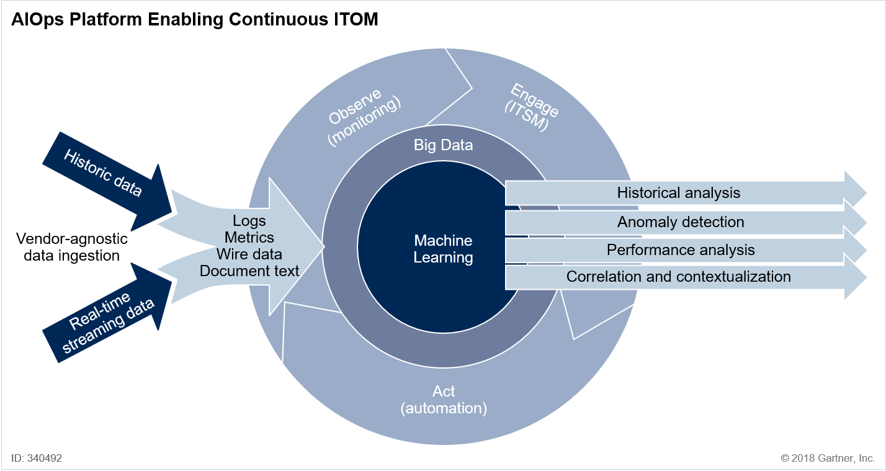
典型AIOps 平台介绍¶
下面以典型的AIOps 平台为例, 对AIOps的相关功能进行一一介绍.
备注:
截图来自: moogsoft
概览
下图为软件首页, 着重展示了功能:
- 告警降噪 - 250000 的事件降噪为55个场景, 过滤噪声99.9%
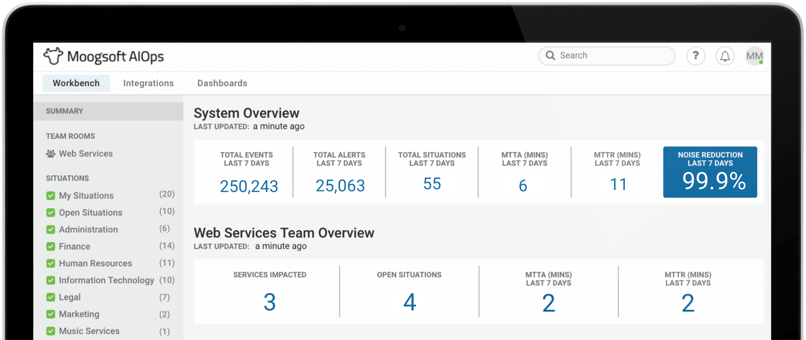
以下是这个AIOps软件的主要功能:
集成
与IT监控，自动化，服务管理，通知和协作工具进行50多种开箱即用的集成; 通过REST，syslog，webhook，socket或SNMP，我们可以与数百个集成，为您在一个平台上的整个IT工具链提供可见的上下文。(集成, 源端集成监控, 目标端集成自动化, 通知工具等)
集成接口:
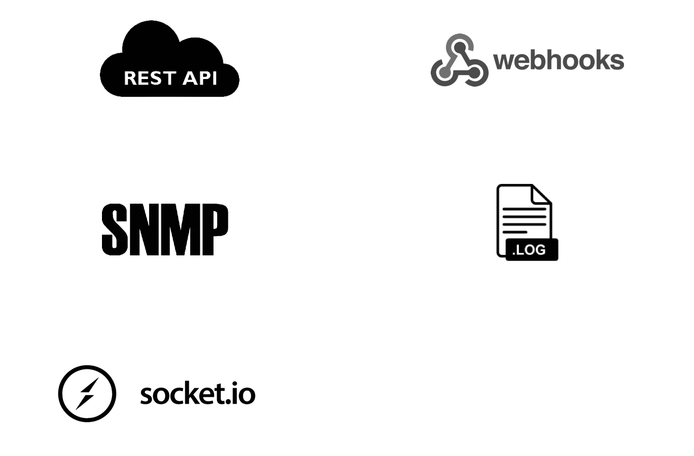
集成的监控:
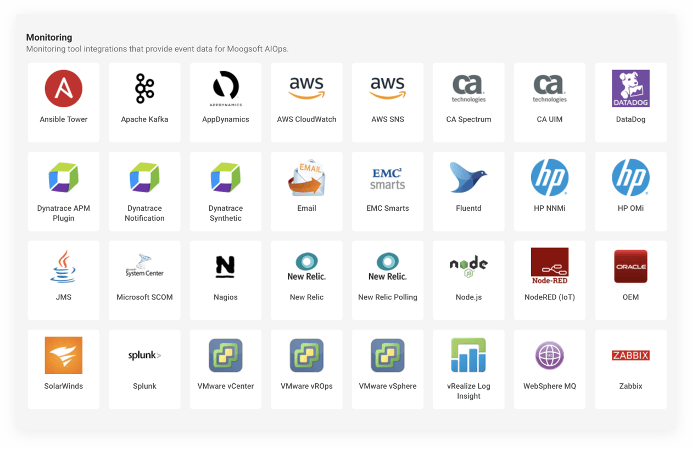
降噪
通过对整个监控堆栈中的所有事件进行数学分析，将信号与噪声分离，将警报量降低90％或更多。
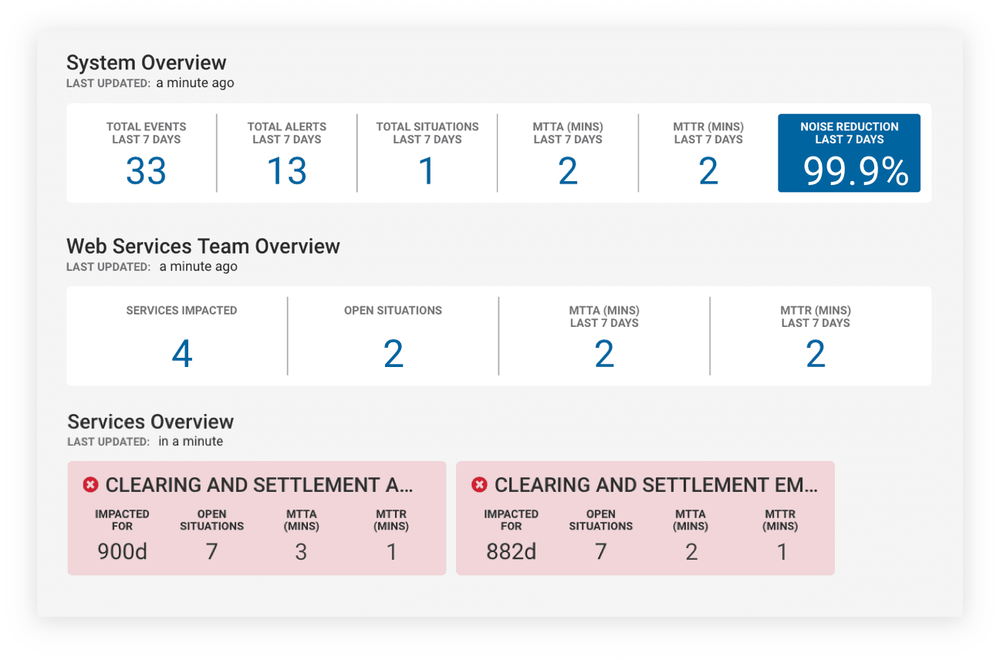
关联
关联整个监控堆栈中的相关警报，为运维人员提供上下文感知，以更快地发现事件。
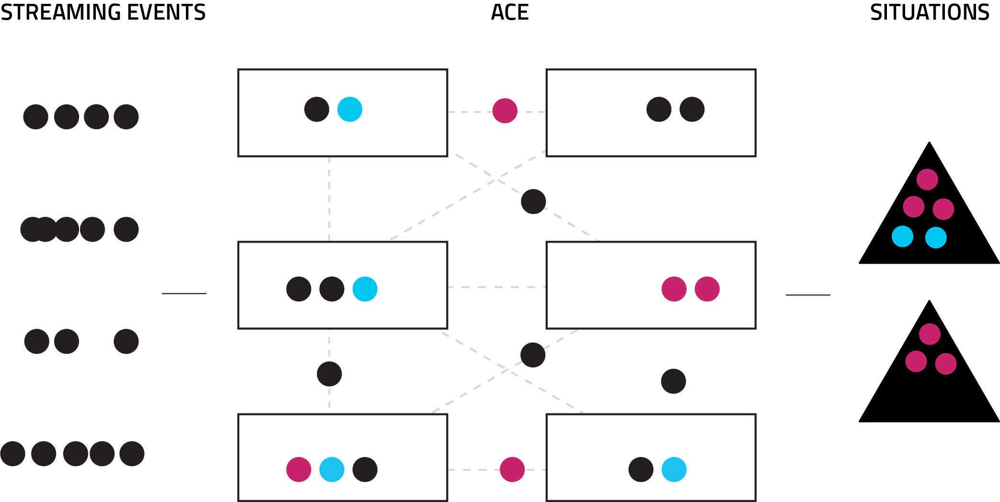
根因分析
机器学习和基于拓扑的算法在当前事件中列出可能根本原因。最重要的是，我们的技术从过去学习，所以如果问题再次出现，您会自动收到有关如何更快地修复它的说明。
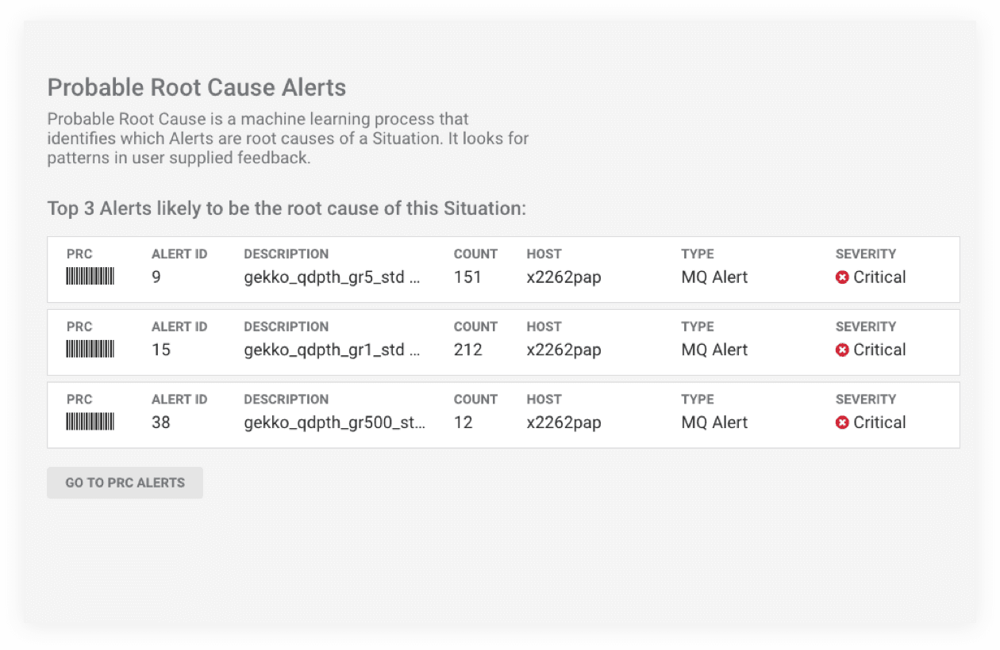
上下文协作和知识捕获¶
将事件传递到合适的人员，以便他们可以一起更快地解决每个事件，同时记录相关恢复步骤，类似事件。我们的AIOps平台可以快速，轻松地跨团队和工具进行协作。
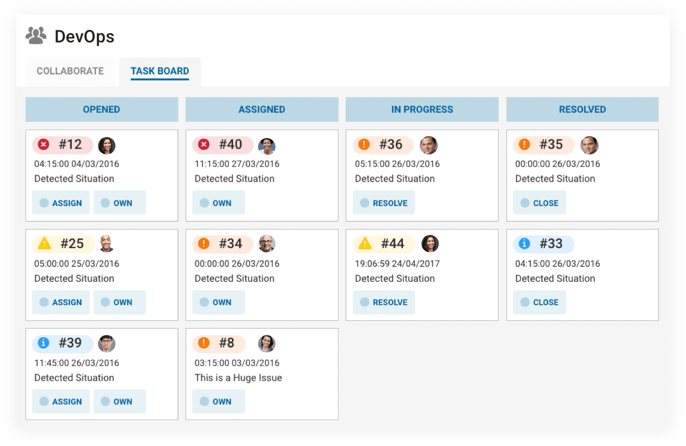
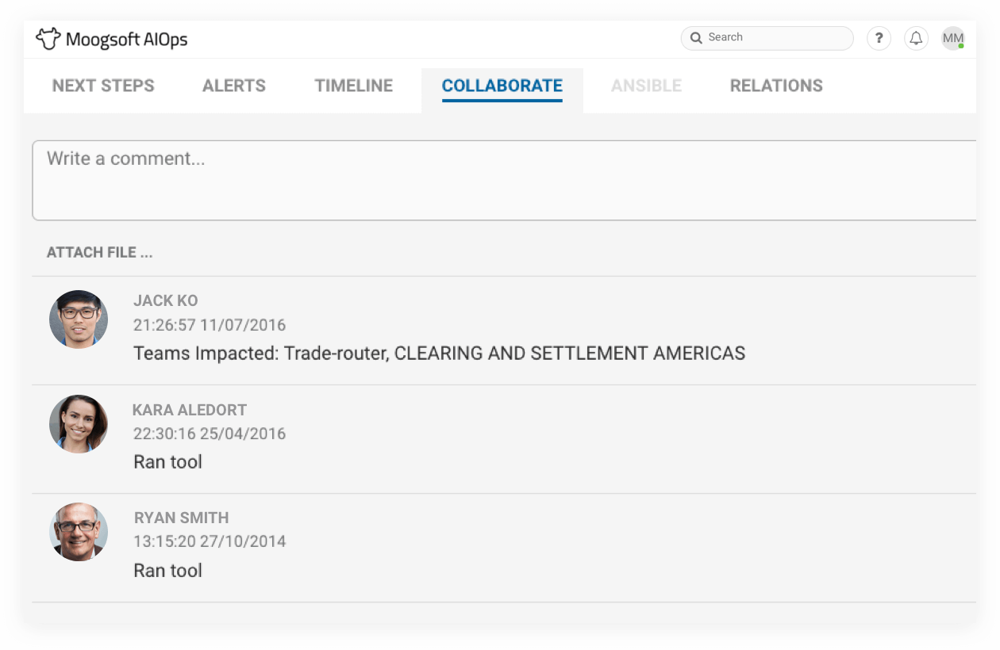
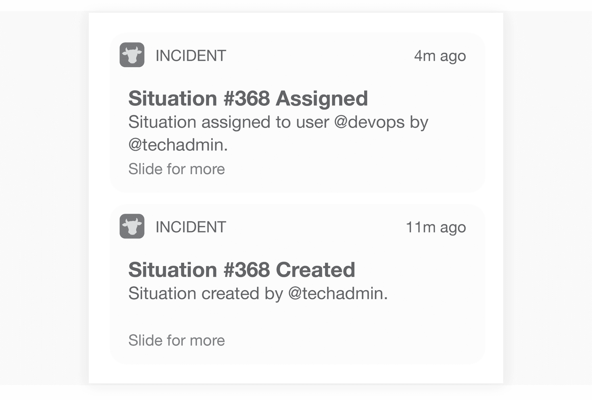
AIOps 诞生背景¶
在过去二十年中，人工智能技术间歇性地影响了ITOM的发展，而AIOps平台只是这种影响的最新例证。IT运营一方面要求精细化运营, 降低成本，另一方面又增加了运营复杂性。可以在数据量(volume), 数据种类(variety)和数据生成速度(velocity)的三个维度上定义复杂性：
- IT基础架构和应用程序产生的数据量快速增长（每年增长2到3倍）
- 机器和人类生成的数据类型越来越多（例如，指标，日志，wire数据和文档[知识管理]）
- 由于采用了云原生或其他敏捷架构，数据生成速度不断提高，IT架构内的变化率也在不断提高
在处理大量，多样化和速度的数据时，现有的监控工具面临压力。更重要的是，监控工具不会跨越提取有用见解所需的多种数据类型。例如，企业需要大量数据，这些数据可能跨越基础架构和应用程序指标，用户体验数据，业务交易数据，拨测数据以及来自各种系统的日志，以获得更多分析, 洞察和见解。
非IT团队如业务条线和IT运营团队（如应用程序开发人员和DevOps），越来越多地表现出对AIOps技术的兴趣，以便在多个数据集中表现出洞察力。
此外，由于数字业务，IT需要采取行动的速度也在不断提高(敏捷快速)，因此需要可以提供以下帮助的工具：
- 降低噪音（例如，以误报或冗余事件的形式）
- 根因分析 - 提供更好的因果关系，这有助于确定事故的可能原因
- 动态告警基线 - 捕获超出静态阈值的异常，以主动检测异常情况
- 故障预测 - 推断未来事件以防止潜在的故障
- 集成处理 - 启动解决问题的操作（直接或通过集成）
迄今为止，AIOps功能主要用于支持IT运维流程，以便监控或观察IT基础架构，应用程序行为或数字体验。AIOps平台投资几乎总是基于其减少平均解决问题时间(提高业务连续性)的能力而得到认可。无论是采用机器学习还是在事件管理上下文中对事件进行重复数据删除，还是在APM上下文中结合基于字节码检测的分布式跟踪数据来分析应用程序日志数据，它们都是合理的。
AIOps正在逐渐演变，不仅可以提取数据进行分析，还可以根据分析启动相应操作。这些操作（最有可能通过与其他ITOM和ITSM工具的集成）将采取多种形式，包括：
- 告警及告警处置
- 问题自动分类及记录
- CMDB清洗, 修正和关联
- 运行预定自动化动作
- 应用程序发布编排
AIOps工具在监控的四个阶段 - 数据采集，聚合，分析和行动（见图2） - 显示了“右移” - 具有数据聚合和分析的核心功能。随着技术的进一步发展，用户将能够利用平台的主动建议，实现行动操作的阶段。
关于监控工具与AIOps的争论刚刚开始，而且可能会增长。然而，从长远来看，专家领域将存在专业监控工具，而对于IT运营通才(SRE团妒?)，主要的工具将是AIOps。
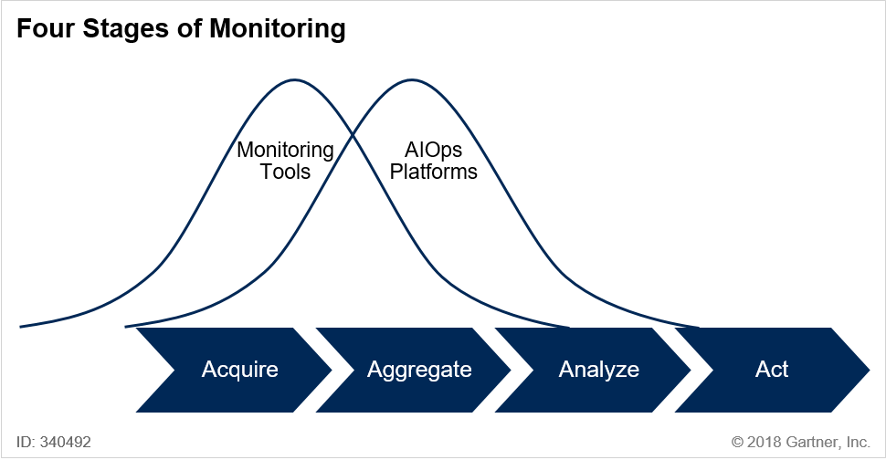
市场分析¶
迄今为止，很少有供应商提供全面，集成的AIOps平台。然而，许多供应商提供了广泛的AIOps功能，其子集彼此集成。为了更清楚地了解市场如何发展以及供应商彼此之间的位置，Gartner将当前可用的AIOps功能划分为数据管理和分析结果两大类：
数据摄取和处理¶
- 历史和流数据管理 - 允许提取，索引和持久化存储日志数据，wire数据，指标和文档数据的软件或设备。由此产生的数据库大部分是非结构化的或多结构化的，而存储的数据集以高容量累积，以高速度变化并且根据高度变化的格式隐式地构造。这种历史数据管理功能可称为“大数据管理”。为了在IT运营用例下提供价值，该工具还必须将人类用户感知的时间尺度的数据呈现为实时，直接在摄取时提供数据无需访问持久数据库。它必须跨多个实时和历史数据流提供连贯的分析。
分析结果¶
- 基本和高级统计分析- 单变量和多变量分析的组合，包括对IT实体捕获的指标以及源头策划数据的相关性，聚类，分类和推断的使用。
- 自动建立模型和预测 - 使用上述一种或多种类型的历史或流数据，以引出描述可以从数据集本身推断但不立即存在的新相关的数学或结构模式。然后可以使用这些模式及时前进并以不同程度的概率预测事件。
- 异常检测 - 使用先前组件发现的模型首先确定什么构成正常的系统行为，然后辨别出与正常系统行为的偏差。
- 根因分析 - 修剪由自动化模式发现和预测组件建立的相关性网络，以隔离代表真正因果关系的依赖性链接，从而提供有效干预的解决方案。
- 适用性建议 - 对问题进行分类，将其分类为已知类别。然后，它可以挖掘先前解决方案的存储，分析这些解决方案的适用性并以优先级形式提供它们以用于补救。最终，这些将使用闭环方法，并在使用后对其有效性进行投票。
- 拓扑- 对于AIOps检测到的相关且可操作的模式，必须围绕所摄取的数据放置上下文。该上下文是拓扑。如果没有拓扑的上下文和事实上的约束，检测到的模式虽然有效，但可能无益且分散注意力。从拓扑中的数据派生模式将减少模式的数量，建立相关性并说明隐藏的依赖性。使用拓扑作为因果关系确定的一部分可以大大提高其准确性和有效性。使用图形和瓶颈分析捕获事件发生的位置及其上下游依赖关系可以提供关于重点修复工作的重点。
代表性供应商¶
| 供应商 | 成立年份 | 总部 | 网站 |
|---|---|---|---|
| Anodot | 2014 | Israel | https://www.anodot.com/ |
| BigPanda | 2014 | United States | https://www.bigpanda.io |
| BMC | 1980 | United States | https://www.bmc.com/ |
| Brains Technology | 2008 | Japan | https://www.brains-tech.co.jp/en/ |
| CA Technologies | 1974 | United States | https://www.ca.com/us.html |
| Devo (Logtrust) | 2011 | United States | https://www.devo.com/ |
| Elastic | 2012 | United States | https://www.elastic.co/ |
| Evolven | 2007 | United States | https://www.evolven.com/ |
| FixStream | 2013 | United States | https://fixstream.com/ |
| IBM | 1911 | United States | www.ibm.com |
| InfluxData | 2013 | United States | https://www.influxdata.com/ |
| ITRS | 1993 | United Kingdom | https://www.itrsgroup.com/ |
| jKool | 2014 | United States | https://www.jkoolcloud.com/ |
| Loom Systems | 2015 | United States | https://www.loomsystems.com/ |
| Moogsoft | 2011 | United States | https://www.moogsoft.com/ |
| Scalyr | 2012 | United States | https://www.scalyr.com/ |
| ScienceLogic | 2003 | United States | https://sciencelogic.com/ |
| SignalFx | 2013 | United States | https://signalfx.com/ |
| Splunk | 2004 | United States | https://www.splunk.com/ |
| Stackstate | 2015 | Netherlands | https://www.stackstate.com/ |
| Sumo Logic | 2010 | United States | https://www.sumologic.com/ |
AIOps 平台建设建议¶
通过采用增量方法确保成功部署AIOps功能¶
AIOps功能的有效部署需要从根据数据源重组IT域开始的结构化方法。这种方法将所需的焦点转移到数据集而不是工具，这是传统的方法。Gartner发现，最好先掌握从各种来源获取的大型持久数据集的使用。只有在IT运营团队熟练掌握AIOps的大数据方面之后，才能尝试掌握能力类别。因此，在选择工具或服务时，企业应优先考虑那些允许部署数据提取，存储和访问的供应商，而不依赖于剩余的AIOps组件。鉴于AIOps将用于多个用例，I＆O领导者必须确保供应商支持逐步添加其他功能。
选择能够支持广泛的历史和流数据类型的AIOps平台¶
现代IT运营旨在获得IT实体的综合可见性，包括应用程序，其关系，相互依赖性和过去的转换，以深入了解整体IT环境的现状。选择正确的数据源对于避免盲点至关重要。部署成熟度和不断变化的用例的渐进性需要准备好摄取各种数据源。I＆O领导者必须选择能够摄取和提供对各种历史和流数据类型的访问的AIOps平台（参见图3）。
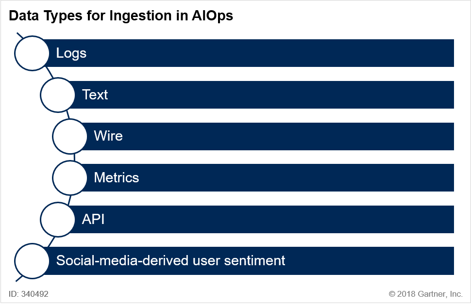
总结¶
建议¶
负责优化IT运营的数据中心负责人应该:
- 通过采用以历史数据开始的增量方法部署AIOps, 并逐步使用流数据, 与不断改进的IT运营成熟度保持一致.
- 要选择这样的 AIOps平台: 通过识别能够摄取和提供对文本和指标数据访问的AIOps平台, 能够全面了解IT系统过去和现在的平台.
- 通过选择支持逐步部署面向IT运维的机器学习四个阶段的工具, 深化其IT运营团队的分析技能: 描述性, 诊断性, 主动性能力和根本原因分析, 以帮助避免高严重性中断.